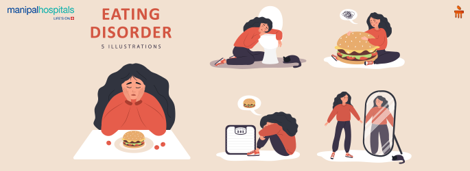

Eating Disorders

Anorexia Nervosa
People with Anorexia have an intense fear of gaining weight. They often heavily restrict what they eat and how much they eat, which can lead to being malnourished or underweight. Symptoms include:
- being overly concerned with weight or body shape
- negative self-image
- extreme weight loss
- being tired and weak from lack of proper nutrition
- becoming dizzy or faint
- stomach pain
- causing oneself to vomit
- lack of hunger
- feeling full before eating a whole portion of food
- extreme focus on food
- skipping meals
- not wanting to eat in public
- strict diet
- excessive exercise
- repeatedly checking weight
- wearing layers to cover the body
- focus on appearance
- needing to feel in control
- a distorted sense of body image
- dry mouth
Bulimia Nervosa
Bulimia is characterized by binge eating followed by actions to make up for the binge, also referred to as purging. Symptoms include:
- forcing oneself to vomit
- excessive exercise
- constant sore throat
- severe dehydration
- consistently going to the bathroom following meals
- buying large amounts of food
- fear of gaining weight, unhealthy focus on losing weight
- eating large amounts of food in one sitting
- using water pills or directics, laxatives, or enemas unnecessarily
- fasting for no concrete reason
- dissatisfaction with weight or body shape
- constant concern over eating
- having a distorted view of the body
- stomach problems
- wanting to eat only in private
- shame over behavior around eating
Binge Eating
Binge eating, like Bulimia, is focused on eating a large amount in one sitting. However, it is not followed by any kind of corective behavior, often leading to individuals being overweight. Symptoms include:
- feeling unable to control how much one eats, being unable to stop eating
- eating when full or otherwise not hungry
- quickened pace of eating
- eating alone or in secret
- shame around your eating behaviors
- eating past the point of fullness
- eating excessively large portions
- using food as a coping mechanism
- being overweight
Avoidant/Restrictive Food Intake Disorder
ARFID is an eating disorder where a person heavily limits what they eat or how much. This is often not characterized by any negative view of the body or behaviors around food, unlike other eating disorders. Symptoms include:
- disinterest in food
- being extremely picky
- avoiding certain foods
- only eating foods deemed "safe"
- avoiding meals
- refusal to eat
- nutritional deficiency
- weight loss or being otherwise malnourished
- being sensitive to taste, smell, texture, or sight of certain foods
- fear of choking, vomiting, or other stomach problems
- fear of having an allergic reaction to foods
- refusal to try new foods
- loss of appetite